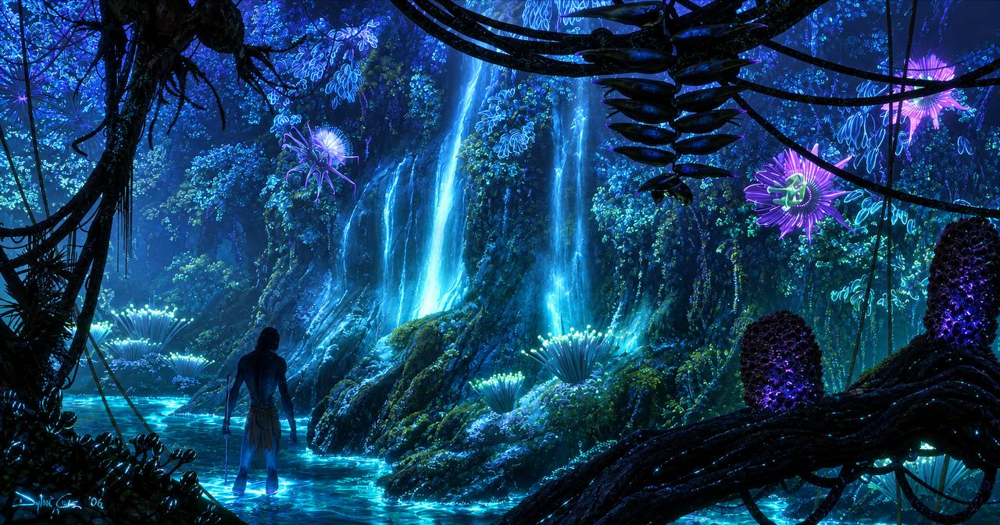

Пандора
Живой мир, где каждое существо - часть единого целого.
Добро пожаловать на Пандору
Погрузись в удивительный мир, где природа живёт в гармонии, а небо принадлежит тем, кто осмеливается летать.
▶ Смотреть трейлер
Живой мир, где каждое существо - часть единого целого.
Легендарные летуны, которые дарят свободу и новое восприятие мира.
Сильный народ, чья связь с природой сильнее всех технологий.
Вечерняя магия Пандоры, которая делает мир живым.

Свобода в каждом взмахе крыльев
Икран - не просто транспорт. Это связь, доверие и полёт, который меняет тебя навсегда.